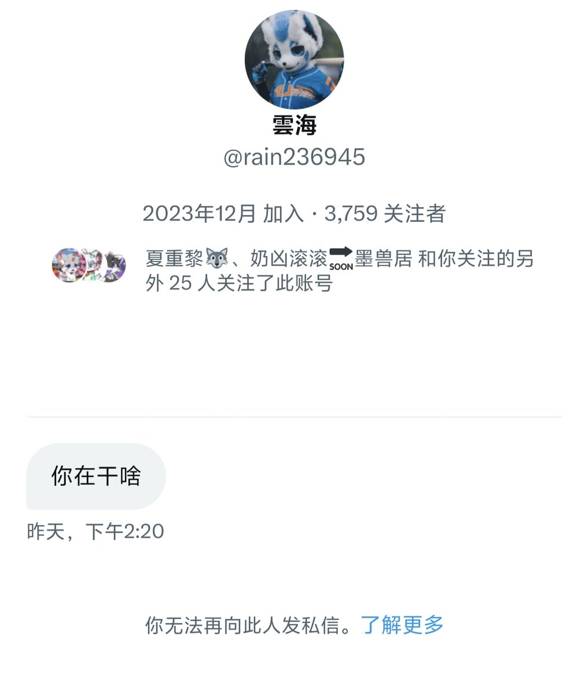
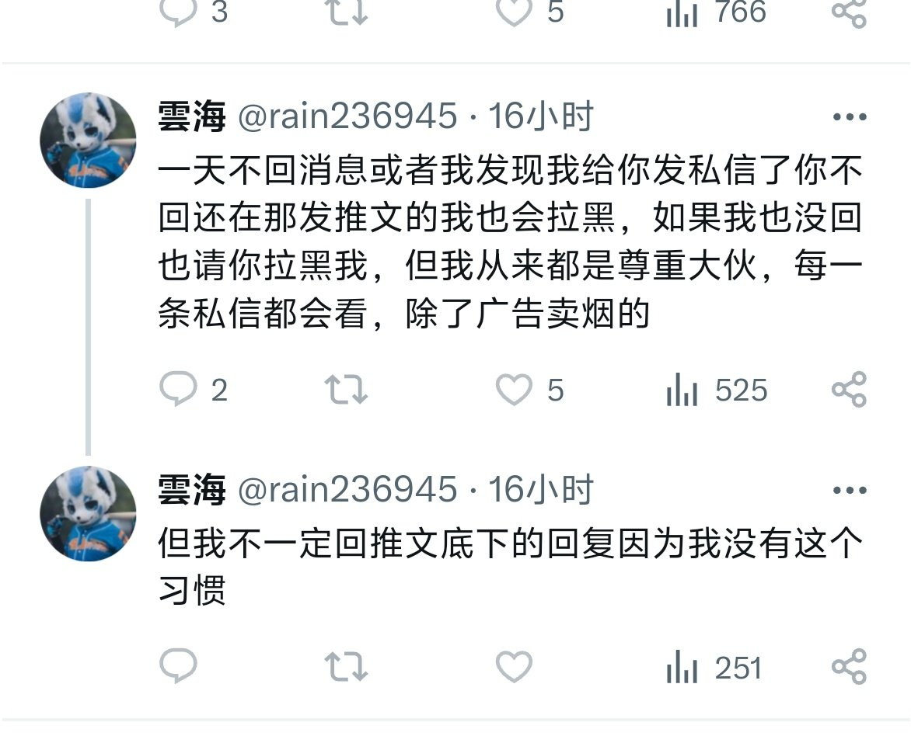

🍀🍥竹蜻蜓🍥🍀
@zqtlovekris99
@ynthien8885 好矫情啊神经病，先不说发的内容和推特延迟问题，我就是想刷刷推有什么义务先回你的私信啊你给我钱吗我必须第一时间回私信以为自己是谁了


𝒚𝒏𝒕𝒉𝒊𝒆𝒏云天
@ynthien8885
这位老师，很对不起！你的私信消息在推的“私信请求”的消息抽屉里，推没有给我弹消息提醒😨，我昨晚没有查看那个私信抽屉很抱歉。。。不是我看到刻意不回你的！😭
刚刚今早我才发现。你这条私信之后没过两个小时就把我ban了😭，我确实没来得及查看dbq🙏
感谢你的关心！谢谢！🙏
有人能帮我转答一下吗🥺 https://t.co/vR2i2RO1IH